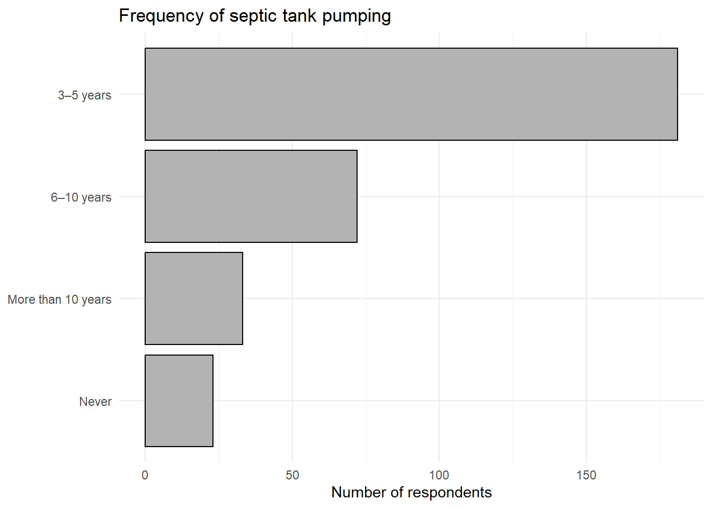

Select and justify appropriate data visualizations
Create accessible data visualizations
Communicate findings in written form
Collecting and analyzing data is only part of the research process. In applied social and environmental research, findings matter only insofar as they can be communicated clearly to others - community members, practitioners, policymakers, and fellow researchers. The way results are written, visualized, and formatted shapes how they are interpreted and whether they can be used.
This chapter focuses on how to translate analysis into communication. We begin by emphasizing the importance of clarifying the data story you want to tell, then move into creating data visualizations using R. From there, we examine how to choose appropriate charts, apply principles of effective and ethical visualization, report statistical results in writing, and ensure that research products are accessible to diverse audiences.
7.1 Telling Your (Data) Story
You’ve crunched the numbers and suffered through statistics. Now it’s time to turn the data insights you discovered into data visualizations and written summaries that communicate what you learned.
Before you begin creating data visualizations or drafting a report, you need to decide what you want to say about your data.
Stop and answer these questions:
Who is your audience?
What questions do they have?
What answers can your data analysis offer?
What new questions did your analysis inspire?
Ultimately, what do you want viewers or readers to take away from your data story?
Getting clear on these questions before writing code or drafting text will help you make thoughtful choices about which results to emphasize and how to communicate them (Tableau, n.d.).
7.2 Selecting Charts for Your Data
Your data visualization needs to fit your purpose, so getting clarity on what you want to communicate is a critical starting point. Next, identify the type of chart that best fits both your data and your message.
Different chart types are suited to different kinds of variables and analytic goals (Codecademy, n.d.). Below are several common chart types used throughout this book with code examples demonstrating how they can be implemented in R.
Bar charts are one of the most common data visualizations. They represent values as lengths on a baseline and are especially useful for comparing groups or displaying categorical distributions.
For categorical variables with longer labels, plotting categories on the y-axis improves readability.
library(tidyverse)data <-read_csv("demo_data.csv")plot_data <- data %>%mutate(SEPTICPUMP_f =factor( SEPTICPUMP,levels =c(0, 1, 2, 3),labels =c("Never", "More than 10 years", "6–10 years", "3–5 years") ) )ggplot(plot_data %>%drop_na(SEPTICPUMP_f), aes(y = SEPTICPUMP_f)) +geom_bar(color ="black", fill ="grey70") +labs(title ="Frequency of septic tank pumping",y =NULL,x ="Number of respondents" ) +theme_minimal()

This grayscale bar chart communicates the distribution clearly without relying on color. It is a strong default for technical reports and printed documents.
When your goal is to compare how groups are composed, rather than how large they are, stacked bar charts are often more informative than simple frequency plots.
A 100% stacked bar chart displays the proportion of each category within a group, making it easier to compare distributions across groups while removing differences in group size.
This type of chart is especially useful for visualizing results from chi-square tests and other subgroup comparisons.
In some cases, you may want to examine whether patterns differ across specific subgroups. Faceted bar charts allow you to break data into panels while keeping the same visual structure, making comparisons easier.
Facets help answer questions such as: Does this pattern look the same for everyone, or does it differ by subgroup?
7.3 Visualization Best Practices
They say that a picture is worth a thousand words, which makes data visualization a powerful communication tool. Effective data visualizations can be interpreted quickly and accurately, without requiring extensive explanation. They prioritize readability, organization, and clarity, as noted in this video from Visme:
In sum, a few rules of thumb for effective data visualization include:
Legibility matters. Labels should be oriented horizontally, fonts should be readable, and formatting should be consistent. Values should be ordered logically, often from greatest to least, to make comparisons easier.
Avoid visual overload. Combining too many measures in a single chart can obscure rather than clarify meaning. When necessary, information should be broken into multiple visuals.
Accuracy is ethical. Misleading scales, truncated axes, or ambiguous labels can distort interpretation and undermine trust. Ethical data visualization requires that figures represent the data honestly and transparently.
Use color intentionally. High contrast improves readability, and color should never be the only way information is conveyed. When color is used, accessible color palettes and consistent hex values help ensure clarity across figures.
Visualizations are powerful, but they are not always sufficient on their own. Charts are best for communicating patterns quickly, while tables are better suited for reporting exact values. In practice, effective reports often use both: a figure to show the pattern and a table to provide precise percentages or counts (Arthur & Clark, 2021; Zimmer et al., 2025). Choosing between tables and charts—or using both—is part of telling a clear data story.
7.4 Report Structure and Mechanics
Most technical reports and research briefs follow a familiar structure:
An executive summary
Background
Research methods
Study participants
Findings
Recommendations and conclusions
References
Using a consistent structure improves clarity for readers and helps writers organize complex material into manageable sections (Arthur & Clark, 2021; Zimmer et al., 2025).
The executive summary is often the most read section of a report. Many readers will only read this section, so it must stand on its own. Executive summaries are typically one page or less. The goal is not detail, but a clear and concise overview of the contents in the full report.
A strong executive summary states the purpose of the report, briefly describes the methods used, highlights major findings, and includes central conclusions or recommendations. A helpful strategy is to write the executive summary after completing the full report, when you can clearly see what matters most.
The background section elaborates on the purpose of the research and provides context for the study. It explains why the issue matters and situates the research within a broader social or environmental conversation. A clear problem statement will be articulated justifying the need for the research. This section is the place to provide supporting evidence from previous studies and/or references to contextual information for further reading.
The methods section explains how the research was conducted, including data collection procedures, techniques used to recruit participants, how many people were sampled, and how analyses were performed. Transparency allows readers to evaluate the strengths and limitations of the study.
The study participants section describes the people who were included in the study. The characteristics of the final study sample are presented, often in a table, so that readers have a full picture of the people whose data are included in your report.
The findings section presents what you discovered through analysis. Findings are often organized by theme or research question and should integrate figures and tables directly into the text.
Results should be described clearly in writing. Effective results writing highlights key patterns in the data, uses specific numbers to support claims, and connects visualizations to the research questions being addressed.
For example, when reporting descriptive statistics or percentages, results should be stated plainly before interpretation:
Eighty-seven percent of respondents expressed concern about local water quality, while 72% reported that septic system management was an important issue affecting nearby lakes and streams.
When figures compare groups - such as 100% stacked bar charts - results should describe how distributions differ across categories:
Respondents living on residential properties were more likely to report regular septic tank pumping compared to those operating small or large farms.
Figures should be referenced explicitly in the text (e.g., “Figure 3 shows…”), and each visualization should be accompanied by a brief explanation of what the reader should notice.
Some figures summarize results that are later evaluated using statistical tests. For example, subgroup comparisons shown in stacked or faceted bar charts are often followed by chi-square tests of independence.
When reporting chi-square results, researchers typically include the test statistic, degrees of freedom, sample size, and \(p\)-value:
A chi-square test of independence indicated a statistically significant relationship between property type and septic pumping frequency, χ²(6, N = 412) = 14.8,\(p\) < .01.
When reporting Spearman’s rho results, researchers typically include the correlation coefficient (ρ) and the \(p\)-value.
Both years lived in the watershed (ρ = .31,\(p\) < .001) and frequency of septic tank pumping (ρ = .22, \(p\) < .01) were significantly correlated with the perceived severity of E. coli pollution.
When reporting Mann–Whitney U test results, researchers typically report the median and interquartile range (IQR) for each group, followed by the test statistic and \(p\)-value.
There was a significant difference in nitrate concern scores between respondents living within 100 meters of surface water (Median = 4.0, IQR = 1.0) and those living farther away (Median = 3.5, IQR = 1.0); W = 8234,\(p\) = .02.
When results are not statistically significant, this should also be stated explicitly.
There was no significant difference in reported septic inspection frequency between year-round residents (Median = 2.0, IQR = 1.0) and seasonal residents (Median = 2.0, IQR = 1.0); W = 10512,\(p\) = .38.
When reporting Kruskal–Wallis test results, researchers typically report the median and interquartile range (IQR) for each group, followed by the test statistic with degrees of freedom and the \(p\)-value. If post-hoc comparisons are conducted, those results should also be reported.
There was a significant difference in self-reported shoreline stewardship engagement among residents in agricultural watersheds (Median = 3.0, IQR = 1.0), mixed-use watersheds (Median = 4.0, IQR = 1.0), and primarily residential watersheds (Median = 4.5, IQR = 1.0); H(2) = 11.28,\(p\) = .004. Post-hoc pairwise comparisons using Dunn’s test with Holm-adjusted p-values indicated a significant difference between agricultural and residential watersheds (U = 6841, \(p\) = .006), but not between agricultural and mixed-use watersheds (\(p\) = .042) or mixed-use and residential watersheds (\(p\) = .071).
The goal is not to overwhelm readers with statistics, but to provide transparent evidence that supports the patterns shown in the figures.
The concluding section summarizes major takeaways and issues a clear call to action. Rather than repeating results, it focuses on implications, recommendations, and next steps.
Effective conclusions connect recommendations directly to evidence presented earlier in the report and emphasize why the findings matter.
References provide sources for readers seeking additional information and establish credibility by grounding the report in the existing literature.
7.5 Document Accessibility
Accessibility is an essential component of ethical research communication. It is also the law. Research findings cannot inform understanding or decision-making if they are not accessible to the people who need them.
Accessible documents use clear heading structures, logical reading order, descriptive captions, and alternative text for images (Visser et al., 2024). Color should never be the sole way information is conveyed (Atlassian, n.d.).
Figures must include clear captions and alternative text (alt text) so that all readers can understand what the figure shows and why it matters.
Microsoft Word and Adobe Acrobat include accessibility checkers that identify missing alt text, incorrect heading hierarchy, and reading-order problems. Running these checks should be treated as a standard part of the research workflow, not an optional final step.
Example Figure Captions
Figure 1. Frequency of septic tank pumping among respondents. Most respondents report pumping every 3–10 years, while fewer report never pumping or waiting more than 10 years.
Figure 2. Septic pumping frequency by property type. The distribution of pumping frequency varies across residential, small farm, and large farm properties, highlighting potential differences in maintenance practices by land use type.
Figure 3. Septic pumping frequency by property type, stratified by livestock ownership. Patterns differ between livestock and non-livestock properties, suggesting that maintenance behaviors may depend on both property type and livestock ownership.
Example Alternative Text
Figure 1 alt text: Horizontal bar chart of four septic pumping categories. The largest bars are “3–5 years” and “6–10 years,” with smaller bars for “More than 10 years” and “Never.”
Figure 2 alt text: 100% stacked bar chart for three property types showing proportions across four septic pumping categories. The composition differs across property types.
Figure 3 alt text: Two-panel 100% stacked bar chart (No livestock vs. Livestock) showing septic pumping proportions across residential, small farm, and large farm property types. Category distributions differ across panels.
7.6 Summary
Communicating research findings involves a series of intentional decisions: clarifying the data story, choosing appropriate visualizations, writing clearly and logically, and ensuring that documents are accessible to all readers.
When these elements work together, research becomes more than an academic exercise. It becomes a tool for understanding, engagement, and action. It’s time to start telling your watershed story!
7.7 Reflection Questions
Effective research communication begins with a clear data story. Why is it important to identify your audience and communication purpose before selecting data visualizations or writing up results?
Different visualization types highlight different features of the data. What information does a 100% stacked bar chart reveal that a simple frequency table or standard bar chart might not?
Visualizations summarize patterns, not explanations. Why should charts and figures be interpreted alongside contextual knowledge about environmental systems and human behavior?
Clear writing connects statistical results to meaning. What problems can arise when figures or statistical test results are presented without interpretation in the written text?
Accessibility is part of ethical research practice. Why should accessibility checks be treated as a standard step in the research workflow rather than an optional final task?